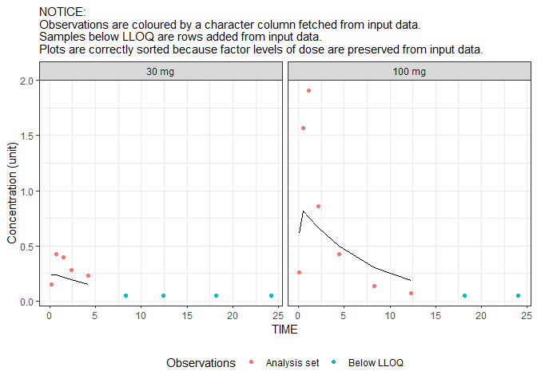
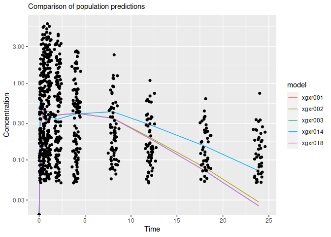

A fast R package for efficient data preparation, consistency-checking and post-processing in PK/PD modeling
Pharmacometrics and PK/PD modeling offers unique information for decision-making in several steps of drug development. However, it often takes a lot of work to get there, and there are many pitfalls along the way. NMdata helps simplifying this work and steering around the pitfalls or at least making sure we didn’t fall into them.
Automate book keeping and focus on modeling
Preparing data sets - and if you use NONMEM, reading the results data - can be tedious, and mistakes can lead to hours of frustration. NMdata provides useful tools (including automated checks) for these trivial tasks.
NMdata is not a silo
Any functionality in the NMdata can be used independently of the rest of the package, and NMdata is not intended to force you to change any habits or preferences. Instead, NMdata tries to fit in with how you (or your colleague who worked on the project before you) do things. It likely provides helpful additions no matter what other tools you already use.
More information
The best place to browse information about the package is here. The quickest way in is the Cheatsheet.

Prepare, check, and export PK/PD data
On the data-generation side, functionality is provided for documentation of the datasets while generating them. Check out this vignette on the topic. There are functions for automatic checks of (some) data merges, handling and counting of exclusions flags, final preparations for ensuring readability in NONMEM, and ensuring traceability of datasets back to data generation scripts.
Check data as read by NONMEM
The NMcheckData function will do an extensive and fully automated set of checks of the data before you run NONMEM. And did NONMEM not behave? NMcheckData can debug the data as seen by NONMEM. That’s right - it has never been easier to find data bugs.
Automated and general reader of NONMEM results data
Reading the resulting data from NONMEM can require a few manual steps. Especially because all modelers seem to do things a little differently. NMscanData can return all data output ($TABLE) from NONMEM combined, and if wanted with additional columns and rows in input data. It’s as simple as
res <- NMscanData("xgxr014.lst",recover.rows=TRUE)
#> Model: xgxr014
#>
#> Used tables, contents shown as used/total:
#> file rows columns IDs
#> xgxr014_res.txt 905/905 12/12 150/150
#> xgxr2.rds (input) 1502/1502 22/24 150/150
#> (result) 1502 34+2 150
#>
#> Input and output data merged by: ROW
#>
#> Distribution of rows on event types in returned data:
#> EVID CMT input-only output result
#> 0 1 2 0 2
#> 0 2 595 755 1350
#> 1 1 0 150 150
#> All All 597 905 1502And we are ready to plot (a subset of) the result:
res.plot <- subset(res,ID%in%c(113,135)&EVID==0)
library(ggplot2)
ggplot(res.plot,aes(TIME))+
geom_point(aes(y=DV,colour=flag))+
geom_line(aes(y=PRED))+
facet_wrap(~trtact)+
labs(y="Concentration (unit)",colour="Observations",
subtitle="NOTICE:\nObservations are coloured by a character column fetched from input data.\nSamples below LLOQ are rows added from input data.\nPlots are correctly sorted because factor levels of dose are preserved from input data.")+
theme_bw()+theme(legend.position="bottom")
#> Warning: Removed 2 rows containing missing values (`geom_line()`).
Want a tibble instead? Easy:
res.tibble <- NMscanData("xgxr001.lst",as.fun=tibble::as_tibble,quiet=TRUE)Or a data.table? This time, we’ll configure NMdata to return data.tables by default:
NMdataConf(as.fun="data.table")
res.dt <- NMscanData("xgxr001.lst",quiet=TRUE)NMscanData is very general, and should work with all kinds of models, and all kinds of other software and configurations. Take a look at this vignette for more info on the NONMEM data reader. Then you will learn how to access the meta data that will allow you to trace every step that was taken combining the data and the many checks that were done along the way too.
Meta analysis made really easy
Since NMscanData is so general and will figure out where to find input and output data on its own, let’s use the NMscanMultiple wrapper to read multiple models and compare their predictions.
res <- NMscanMultiple(dir=system.file("examples/nonmem", package="NMdata"),
file.pattern="xgxr.*\\.lst",as.fun="data.table",quiet=TRUE)
#> Input and output data were searched for candidate unique row identifiers. None
#> found. To skip this check, please use merge.by.row=TRUE or merge.by.row=FALSE.
#>
#>
#> Overview of model scanning results:
#> lst
#> 1: /tmp/Rtmp82nZom/temp_libpath1370126d22f6/NMdata/examples/nonmem/xgxr001.lst
#> 2: /tmp/Rtmp82nZom/temp_libpath1370126d22f6/NMdata/examples/nonmem/xgxr002.lst
#> 3: /tmp/Rtmp82nZom/temp_libpath1370126d22f6/NMdata/examples/nonmem/xgxr003.lst
#> 4: /tmp/Rtmp82nZom/temp_libpath1370126d22f6/NMdata/examples/nonmem/xgxr014.lst
#> 5: /tmp/Rtmp82nZom/temp_libpath1370126d22f6/NMdata/examples/nonmem/xgxr018.lst
#> nrows ncols success warning
#> 1: 905 40 TRUE FALSE
#> 2: 905 34 TRUE FALSE
#> 3: 905 34 TRUE FALSE
#> 4: 905 36 TRUE FALSE
#> 5: 905 33 TRUE FALSE
gmean <- function(x)exp(mean(log(x)))
res.mean <- res[,.(gmeanPRED=gmean(PRED)),by=.(model,NOMTIME)]
obs.all <- unique(res[,.(ID,NOMTIME,TIME,DV)])
ggplot(res.mean,aes(NOMTIME,gmeanPRED,colour=model))+geom_line()+
geom_point(aes(TIME,DV),data=obs.all,inherit.aes=FALSE)+
scale_y_log10()+
labs(x="Time",y="Concentration",subtitle="Comparison of population predictions")
#> Warning: Transformation introduced infinite values in continuous y-axis
#> Transformation introduced infinite values in continuous y-axis
Get the most recent version
If your archive has not been updated since July 2021, you may not find NMdata if you try to install with install.packages (option 1). In that case you have two other options. You can explicitly select CRAN for the installation. Or if you should want a version that has not yet reached CRAN, installing from Github is easy too.
## Option 2: Install explicitly from CRAN
install.packages("NMdata",repos="https://cloud.r-project.org")
library(NMdata)
## Option 3: Install from github
library(remotes)
install_github("philipdelff/NMdata")
library(NMdata)If you use the Github version, you may want to see the FAQ for how to install specific releases from Github (ensuring reproducibility).
Issues?
The best way to report a bug or to request features is on github.
Code of Conduct
Please note that the patchwork project is released with a Contributor Code of Conduct. By contributing to this project, you agree to abide by its terms.